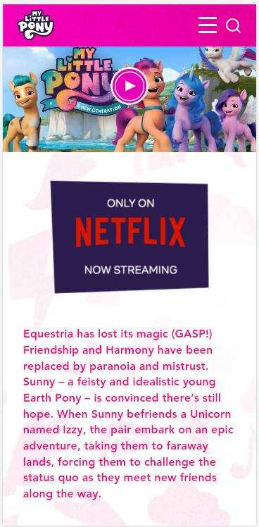
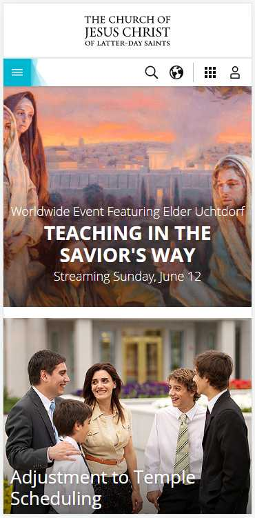

Design Principles Document
Reace Ian Roeloffze
Visual Hierarchy
Hasbro
https://mylittlepony.hasbro.com 
This site demonstrates visual hierarchy by first of all making the trailer for the latest show the most visible on the page and a user's attention is immediately directed there. Directly below that is the image that tells the user where this show is streaming along with a synopsis of the above trailer and they will immediately head there if interested. Then attention is drawn to the next section paragraph advertising another site with a release date and where it will be streamed followed by an image. This images truly capures the user and compliments the paragraph. Theere are emphasised buttons on the site along with key visuals for what they represent and all the images are what prompt a user to explore the page further which is where the visual buttons come in to play. This site also demonstrates the law of proximity and repetition really well in that all relevant content is grouped together and that there is always an accompanying image to each section as well as a consistent colour pallete.
Fitt's Law
The Church of Jesus Christ of Latter-Day Saints
https://www.churchofjesuschrist.org 
There is no better demonstration of Fitt's Law than this site. As Fitt's law states, the larger and closer the target area, the greater and easier its usability. The church website is layed out exactly like that, especially on mobile. All the images cover the entire width of the mobile viewport and are quite large, making them easily clickable and readible. All text links and drop-down menus are also considerably large, making for very easy accessibility. It's a site that does really try its best to accomodate all audiences and groups of people from all walks of life and strive to make browsing the site more convenient for everyone.
Hick's Law
Capcom
https://www.capcomusa.com
Hick's Law by definition is that the fewer options to choose from on a website, the more user-friendly and usable it is. The Capcom US site makes good use of this law, allowing users to search their favourite games by game itself and then can take it further by sorting through options like release date, genre, etc, thus allowing purchasing and viewing games to be quick and almost effortless. While it does not offer the same filters for news articles, they are limited in number per page. There is also a good use of white space and design on this site.